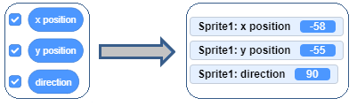
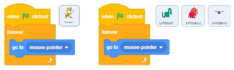
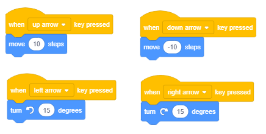

Reci gdje da idem – Kordinate i smjer¶
Naučivši osnove okoline, vrijeme je da naučite kako slati likove na željena mjesta na pozornici. Morate znati kako je pozornica organizirana i naučiti naredbe koje vam omogućuju kretanje.

Pozornica
Kad se Scratch pokrene, automatski se stvara pozornica: bijeli pravokutnik koji ima 480 točaka u širini i 360 točaka u visinu. Najmanja točka koja se može prikazati na zaslonu računalne grafike naziva se Pixel.
Pozornica je mjesto na kojem će se prikazivati vaše priče, igre i animacije. Nepokretna je, poput akvarija, ali njegovi stanovnici - likovi - neprestano se kreću i međusobno se izmjenjuju. Da biste lako kontrolirali kretanje lokova, svakoj točki na pozornici dodjeljuje se adresa - koordinate x i y, koje predstavljaju udaljenost točke od središta pozornice. Središnji stupanj ima koordinate x = 0 i y = 0, ili kraće: (0,0).
Koordinate omogućuju precizno vođenje likova oko pozornice i mogu se dovesti do proizvoljne točke (x, y). Trenutni položaj lika može se vidjeti u podacima o trenutnom liku.
Funkcije blokova iz grupe Motion (Kretanje)
Sve naredbe koje vam omogućuju postavljanje znakova u željeni položaj i kontrolu njihova smjera i kretanja podudaraju se blokovima u grupi Motion. Njihova recenzija dana je u lekciji 11 ovog praktikuma. U ovoj lekciji ćemo kroz primjere i vježbe detaljnije predstaviti blokove koji omogućuju kretanje i pokazati kako se koriste blokovi reporteri. Blokovi reporteri se ne uklapaju u jezičnu naredbu i ne mogu biti samostalni u skripti. Funkcija reportera iz gupr Motion (Kretanje) je da zadržati trenutne koordinate i orijentaciju znakova.
Motion Reporters
To su blokovi  i
i  , koji sadrže trenutne podatke o tome gdje se znak nalazi (koje su njegove x i y koordinate), kao i blok
, koji sadrže trenutne podatke o tome gdje se znak nalazi (koje su njegove x i y koordinate), kao i blok  koji pokazuje kako je lik usmjeren.
koji pokazuje kako je lik usmjeren.
Da biste na pozornici vidjeli što su trenutne koordinate znaka i gdje gleda, potvrdite potvrdne okvire pored odgovarajućih blokova. Ako se potvrdnim okvirima potvrđuje izvještaj o kretanju, na pozornici su prikazani odgovarajući monitori za praćenje trenutnih koordinata i smjera znaka.
{kind=link}
Apsolutno i relativno kretanje
Možete poslati lik na određeno mjesto na pozornici na dva načina: apsolutno i relativno kretanje.
Apsolutno kretanje je premještaj na određeno mjesto - odredište, neovisno o trenutnom položaju lika.
Na Scratchu se lik može poslati na zadanu poziciju (x, y) na pozornici ili izvesti apsolutno kretanje, koristeći sljedeće blokove:
 - go to position (х,у),
- go to position (х,у), - glide to the position (х,у),
- glide to the position (х,у), - set coordinate x to the position,
- set coordinate x to the position, - set coordinate y to the position.
- set coordinate y to the position.
Naredbom lik se premješta na zadanu lokaciju (x,y).
Slično bi, s početne točke, s odredbom stigla do odredišta ,, ali taj se potez ne bi dogodio trenutno, već bi trajao određeni broj sekundi. Što veći broj puta kliznete, duže će vam trebati da stignete na svoje odredište.
Drugi način postavljanja odredišta u apsolutnom gibanju je neovisno postavljanje x i y koordinata pomoću naredbi and .
Relativno kretanje je pomicanje mjesta koje je udaljeno određenog broja koraka od trenutne pozicije lika. Naravno, treba reći i u kojem smjeru ići (desno, gore i sl.).
Drugi način da se odredište postavi u relativnom gibanju je neovisno postavljanje h i u koordinata pomoću naredbi  i
i  .
.
Na Scratchu se lik može poslati u položaj udaljen od trenutnog zadanog broja koraka ili izvršiti relativno pomicanje, koristeći sljedeće blokove:
- - promijenite x za 10 pixela horizontalno u odnosu na trenutnu poziciju,
- - promijenite y za 10 pixela vertikalno u odnosu na trenutnu poziciju,
 - okreni se udesno 15 stupnjeva u odnosu na zadanu poziciju,
- okreni se udesno 15 stupnjeva u odnosu na zadanu poziciju, - okreni se ulijevo 15 stupnjeva u odnosu na zadanu poziciju
- okreni se ulijevo 15 stupnjeva u odnosu na zadanu poziciju - idi 10 koraka u zadanom smjeru u odnosu na zadanu poziciju.
- idi 10 koraka u zadanom smjeru u odnosu na zadanu poziciju.
 and
and 
Postoje tri načina za postavljanje vrijednosti u polje unosa prvog bloka:

za odabir jedne od ponuđenih vrijednosti s padajućeg popisa, na primjer (0) gore;
unesite novu vrijednost, umjesto stare, na primjer 45;
za okretanje plave strelice koja označava smjer u trenutnim podacima Sprite-a.
s drop-down popisa možete odabrati prema kojem će objektu biti usmjeren Sprite u drugom bloku.

Upravljanje i skretanje
Pored naredbi za skretanje i , koje omogućuju promjenu smjera u odnosu na to kako je lik bio usmjeren, u Scratchu postoje i naredbe koje postavljaju usmjerenje nazavisno od trenutnog položaja lika
To su naredbe i .
Sljedeća slika prikazuje vrijednosti glavnih smjerova koje možete unijeti u polje unosa prvog bloka: gore (sjever), desno (istok), dolje (jug) i lijevo (zapad).

Možete unijeti druge vrijednosti, na primjer, 45 stupnjeva prema sjeveroistoku i 135 stupnjeva prema jugoistoku. Za vožnju prema zapadu ne morate koristiti negativne brojeve. Umjesto toga možete unijeti brojeve od 180 do 360.
Drugi blok omogućuje znaku da pokaže na pokazivač miša ili znak u projektu. Možete odabrati koji lik treba usmjeriti klikom na bijeli trokut u polju vrijednosti, otvaranjem padajućeg popisa i odabirom. Na primjer, u projektu “Šetnja dinosaura” koji ćemo analizirati kasnije u ovoj lekciji, mačka može usmjeriti pokazivača miša ili jednog od 3 dinosaura koji su likovi u ovom projektu.
 Study the following examples¶
Study the following examples¶
Baš kao što smo pokazali u projektu Hello World jednostavan način da lik govori, a zatim smo kroz vježbe nadogradili Projekt tako da lik stvarno izgovara tekst, tako ćemo sada pokazati osnovne naredbe koje pomažu liku da se pomakne, a zatim nadograditi kroz vježbe ove mogućnosti.
Prouči sljedeće primjere projekata¶
Klikni na grupu blokova Motion (Kretanje), pa povuci blok u područje skripti i klikni na njega. Mačak će se pomaknuti u desno 10 koraka.
 Pritisnite ovaj blok više puta i odvedite mačku do desnog ruba zaslona.
Pritisnite ovaj blok više puta i odvedite mačku do desnog ruba zaslona.
Klikanje na pomični blok omogućilo je da se radnja koju ovaj blok izvodi ponavlja više puta. Ponavljanje radnje više puta može se postići i programskim putem.
 Vratite mačku na sredinu ekrana i kliknite na kontrolnu grupu za upravljanje. Blokovi će se pojaviti u blokovima različitog oblika od blokova koje ste koristili - blokovi u obliku slova C sa “ustima” u koje možete umetnuti druge blokove.
Vratite mačku na sredinu ekrana i kliknite na kontrolnu grupu za upravljanje. Blokovi će se pojaviti u blokovima različitog oblika od blokova koje ste koristili - blokovi u obliku slova C sa “ustima” u koje možete umetnuti druge blokove.
 Izaberite blok
Izaberite blok  i povucite ga u područje skripte. Klikom na ovaj blok omogućava se da svi blokovi koji su u njega uloženi izvršavaju zauvijek (sve dok ne zaustavite izvršavanje programa klikom na znak stop).
i povucite ga u područje skripte. Klikom na ovaj blok omogućava se da svi blokovi koji su u njega uloženi izvršavaju zauvijek (sve dok ne zaustavite izvršavanje programa klikom na znak stop).
 Umetnite u “usta” bloka koji se ponavlja i kliknite na njih. Mačka će ponovno nestati sa zaslona.
Umetnite u “usta” bloka koji se ponavlja i kliknite na njih. Mačka će ponovno nestati sa zaslona.
Postoji način da se kretanje znakova može zadržati unutar granica zaslona. Ovo je naredba if on edge, bounce. Odgovarajući blok nalazi se u grupi Motion (Kretanje).
 Zaustavi izvršavanje blokova klikom na znak stop, pa povuci blok
Zaustavi izvršavanje blokova klikom na znak stop, pa povuci blok  u području skripte i stavite je u “usta” bloka ponavljanja, iza bloka kretanje.
u području skripte i stavite je u “usta” bloka ponavljanja, iza bloka kretanje.
The following Script is added to the cat sprite.

Izvodeći ovaj scenarij mačka će se neprestano kretati od jednog do drugog ruba, ali će također ići naopako. Naravno, postoji način da se to ispravi. Jedno je promijeniti način na koji se lik kreće u informacijama o znakovima, a drugo je dati naredbu da okrene lik.
 Povucite blok
Povucite blok  iz grupe Kretanje i stavite je iznad bloka ponavljanja. Provjerite je li način okretanja lijevo-desno odabran s padajućeg popisa ovog bloka.
iz grupe Kretanje i stavite je iznad bloka ponavljanja. Provjerite je li način okretanja lijevo-desno odabran s padajućeg popisa ovog bloka.
 Postavite blok
Postavite blok  na početka skripte, i time ste dovršili projekt “The Walk”.
na početka skripte, i time ste dovršili projekt “The Walk”.
Projekt sada možete pokrenuti klikom na zelenu zastavu i zaustavljanjem klikom na stop. Spremite ga, a zatim krenite u nova istraživanja.
U sljedećem ćemo projektu pokazati kako se uvode novi likovi i pozadine te kako se upravlja znakom pomoću pokazivača miša. Dakle, prije nego što prođete kroz ovaj primjer, proučite priručnike Add Sprite i Add Backdrop.
Primjer 2 – “The Dinosaur Walk”¶
U prethodnom projektu koristili smo repeat forever blok da bismo mačku zauvijek pomaknuli između rubova zaslona, odnosno dok projekt ne bude zaustavljen klikom na znak stop. U ovaj projekt su uključena 4 lika, a svakom ćemo priložiti skriptu koja opisuje njegovo ponašanje. Mačka će zauvijek slijediti pokazivač miša, a ostala 3 znaka - dinosauri, zauvijek će ciljati na mačku.

Stvaranje projekta
Novu pozadinu možete dodati u projekt klikom na sličicu koja se nalazi desno od tipke za izbor likova.

Kliknite gumb pozadine i odaberite Jurassic pozadinu iz biblioteke pozadina.
Odaberite knjižnicu znakova Dinosaur1, Dinosaur2 i Dinosaur3.
Raspored likova kao na slici gore. Liku Dinosaura2 potrebna je promjena smjera. Podrazumijeva se da je orijentacija likova postavljena na 90 (gledajući desno) i da je njihov način rada All Around. Te se postavke mogu promijeniti u znakovnim informacijama ili pomoću odgovarajućih blokova u skriptama uz koje se pridružuju. Koristit ćemo prvu metodu u ovom projektu.
U znakovnim podacima postavite način rotacije za lik: Dinosaur1 – ne rotiraj, Dinosaur2 - lijevo / desno, Dinosaur3 – All Around
Svim dinosaurima pridružite istou skriptu, što zahtijeva da se oni usredotoče na mačku tijekom cijelog projekta. Međutim, ponašat će se drugačije jer imaju različite načine okretanja
Liku mačka pridruži naredbe koje mu omogućuju da prati koordinate pokazivača miša, odnosno da pomiče po pozornici dok korisnik pomiče miš.
Skripte koje opisuju ponašanje dinosaura i mačke prikazane su na sljedećoj slici.
{kind=link}
Započnite projekt i premjesštajte mačku po pozornici. Imajte na umu da dinosauri prate mačku na različite načine.
Tipka na tipkovnici koja će pokrenuti skriptu odabrana je klikom na bijeli trokut pored naziva tipke (razmak), a zatim odabirom željene tipke s padajućeg popisa.

Primjer 3 – “Linear Motion”¶
Proučite priručnik Use the Arrow Keys i kreirajte projekt u kojem se mačka kreće pomoću tipkovnice po pozornici.
Liku mačke pridruži naredbu  .
.
Izaberi tipku Right arrow.
Iz grupe kretanje izaberi naredbu i poveži je s predhodnom naredbom
Iz grupe kretanje izaberi naredbu i poveži je s predhodnom naredbom
Pritisnite tipku sa strelicom desno nekoliko puta. Što se događa?
Duplicirajte ovu skriptu (desnom tipkom miša kliknite prvu naredbu, a zatim odaberite Dupliciraj).
U novoj skripti zamijenite strelicu desno u lijevoj strelici, u bloku točke u smjeru odaberite -90 umjesto 90.
Pritisnite tipku sa strelicom ulijevo nekoliko puta. Što se događa?
 Slično napravite još dvije skripte: voditi mačku 10 koraka prema gore pritiskom tipke sa strelicom prema gore ili 10 koraka prema dolje pritiskom tipke sa strelicom prema dolje.
Slično napravite još dvije skripte: voditi mačku 10 koraka prema gore pritiskom tipke sa strelicom prema gore ili 10 koraka prema dolje pritiskom tipke sa strelicom prema dolje.

Primjer 4 – “Motion with a Turn”¶
Napravit ćemo još jedan projekt za izvođenje znakova pomoću tipki na tastaturi, ali s modificiranim značajkama tipki s strelicamae. Izbacit ćemo naredbe usmjerenja, a s lijevim strelicama i desnim strelicama pridružit ćemo naredbe koje rotiraju znak za 15 stupnjeva lijevo ili desno. S strelicama gore i dolje ćemo pomaknuti 10 koraka i pomaknuti -10 koraka. Odgovarajuće skripte imat će sljedeći izgled.
{kind=link}
Pokreni projekt i testiraj kako se u njemu upravlja s likom.
 Jeste li razumijeli?¶
Jeste li razumijeli?¶
Pitanje 1¶
- 1280 tаčаkа pо širini i 600 tаčаkа pо visini
- 800 tаčаkа pо širini i 600 tаčаkа pо visini
- 480 tаčаkа pо širini i 360 tаčаkа pо visini
- Točno.
- 360 tаčаkа pо širini i 480 tаčаkа pо visini
Q-10: Kolike su dimenzije pozornice?
Pitanje 2¶
- u gornjem lijevom uglu pozornice
- u donjem lijevom uglu pozorni
- u centru pozornice
- Točno.
- zavisi od pridružene pozadine
Q-11: Gdje se nalazi točka s kordinatama (0,0)?
Pitanje 3¶
- Osjećaji
- Kretanje
- Točno.
- Upravljanje
- Izgled
Q-12: Kojoj grupi pripadaju blokovi koji upravljaju položajem, orijentacijom, okretanjem i kretanjem likova?
Pitanje 4¶
- da
- ne
- Točno.
Q-13: Može li pozornica izvršavati nardebe kretanja?
Pitanje 5¶
Q-14: Koje naredbe omogućavaju apsolutno kretanje? (Izaberi sve točne odgovore)

{kind=link}
Pitanje 7¶
Q-16: Koji blokovi predstavljaju reportere kretanja? (Izaberi sve točne odgovore)

Pitanje 8¶

- Jugoistok
- Tamo pokazuje kut od 135 stupnjeva.
- Jugozapad
- Tamo pokazuje kut od -135 stupnjeva.
- Sjeveroistok
- Tamo pokazuje kut od 45 stupnjeva.
- Sjeverozapad
- Točno.
Q-17: Na koju će stranu svijeta gledati lik poslije izvršavanja naredbe  ?
?
Pitanje 9¶
Na sljedećoj slici su prikazani položaji 5 točaka na pozornici.

- (-200,-40)
- (-200,40)
- Točno.
- (200,-40)
- (200,40)
Q-18: Koje su kordinate točke A?
- Point A
- Point B
- Point D
- Point E
Q-19: Koje točke imaju negativnu y kordinatu? (Izaberi sve točne odgovore)
-
Q-20: Upari točke s njihovim kordinatama.
Pokušaj ponovo
- A
- (-200,40)
- B
- (-160,-60)
- C
- (20,0)
- D
- (100,120)
- E
- (180,-80)
Pitanje 10¶
Na sljedećoj slici prikazani su položaji 6 točaka na pozornici

-
Q-21: Upari točke s njihovim kordinatama.
Pokušaj ponovo
- A
- (-160,80)
- B
- (-160,-80)
- C
- (160,-80)
- D
- (80,0)
- E
- (160,80)
- F
- (0,80)
- Točka A
- Ovo bi trebala biti točka koja ima isti x, i suprotnu vrijednost koordinate y kao točka E.
- Točka B
- Ovo bi trebala biti točka koja ima isti x, i suprotnu vrijednost koordinate y kao točka E.
- Točka C
- Točno.
- Točka D
- Ovo bi trebala biti točka koja ima isti x, i suprotnu vrijednost koordinate y kao točka E.
Q-22: Koja je točka simetrična na točku E u odnosu na X os?
- Točka А
- Točno.
- Točka В
- To bi trebala biti točka koja ima suprotnu vrijednost x koordinate i istu y koordinatu kao točka E.
- Točka С
- To bi trebala biti točka koja ima suprotnu vrijednost x koordinate i istu y koordinatu kao točka E.
- Točka D
- To bi trebala biti točka koja ima suprotnu vrijednost x koordinate i istu y koordinatu kao točka E.
Q-23: Koja je točka simetrična na točku E u odnosu na Y os?
- A i B
- A i C
- A i E
- D i F
Q-24: Koje su točke jednako udaljene od y osi? (Izaberi sve točne odgovore)
 Pokušaj!¶
Pokušaj!¶
Vježba 1 – Praćenje položaja likova¶
Povucite znak mačke u gornji lijevi kut pozornice, pa provjerite informacije o znakovima za koordinate točke na kojoj ste ga ostavili.
Zatim ga povucite u gornji desni kut pozornice i ponovno provjerite koordinate točke na kojoj ste ga ostavili
Ponovi prethodni postupak za točke u donjim kutovima pozornice. U kojim je točkama na pozornici koordinata x imala znak minus, a na kojoj je y koordinata negativna?
Uvezite Appleov lik iz biblioteke likova. Plavi okvir bi se trebao pojaviti oko sličice novog lika na popisu likova, što znači da je lik u fokusu. Ako ne, kliknite na njegovu sličicu na popisu likova.
Provjerite varijable h i u položaja na dnu blokade Motion. Apple: x položaj i Apple: y monitori položaja pojavit će se na pozornici.
Sada povlači Appleov lik na različita mjesta na pozornici i nadgleda kako se njegove koordinate mijenjaju.
Vježba 2 – Postavljanje položaja lika s apsolutnim naredbama kretanja¶
Kliknite na scensku sliku pored popisa znakova. Oko slike pozornice pojavit će se plavi okvir, tako da je pozornica u fokusu.
Kliknite gumb Odaberi pozadinu, a zatim iz prozora knjižnice Pozadine koji će se otvoriti odaberite: Xy-grid.
Kliknite karticu Code sada da biste dobili paletu blokova umjesto popisa pozadina.
U grupi Motion block dobit ćete poruku Stage selected: no motion, što je i razumljivo jer se pozornica, koja je trenutno aktivna, ne može pomaknuti.
Kliknite na lik mačke na popisu likova. Kad se oko minijature pojavi plavi okvir, blokovi grupe Motion također će se vratiti.
Povucite blok u područje skripte, pa promijeni
Klikni na ovako izmjenje blok u području skripti. Što se dogodilo?
Povucite blok u područje skripti, pa promijenite vrijednost x na -120 i vrijednost y na 100. Što se dogodilo kada kliknete ovaj blok?
Prati gdje će se lik naći poslije klika na blok u koji si prdhodno upisao različite vrijednosti za x i y. Na primjer, gdje će biti lik ako su obe kordinate negativne, ako su van pozornice i slično.
Vježba 3 – Apsolutno i relativno kretanje¶
Pokušaj voditi lika od točke A do točke B koristeći različite naredbe kretanja.
Postavi kao pozadinu Xy-grid iz biblioteke pozadina.
Iz biblioteke likova izaberi dva nova lika – slova A i B
Slovo A postavi u donji lijevi ugao pozornice na poziciju (-200,-120), a slovo B u gornji desni ugao pozornice na poziciju (200,120). Ovo ćeš najpreciznije napraviti ako slovu A pridružiš blok (povučeš ga u područje skripti dok je slovo A u fokusu), uneseš odgovarajuće kordinate x,y klikneš na blok. Postupak ponovi i za slovo B.
Mačku pridruži naredbu  iz padajućeg izbornika (koju ćeš dobiti kada klikneš na bijeli trokut u polju izbora) izaberi slovo A (Block A).
iz padajućeg izbornika (koju ćeš dobiti kada klikneš na bijeli trokut u polju izbora) izaberi slovo A (Block A).
Klikni na blok Block A i mačak će se naći iznad slova A.
Klikni na blok  iz grupe Looks i mačak će se naći ispod slova A.
iz grupe Looks i mačak će se naći ispod slova A.

Sada u blok izaberi Block-B, pa klikni na njega. Mačak će se istog trenutka naći iznad slova B.
Mačku pridruži blok  a iz padajućeg izbornika izaberi Block-A, pa klikni na njega. Mačak će se 1 sekundu kretati do slova A. Napomena.
a iz padajućeg izbornika izaberi Block-A, pa klikni na njega. Mačak će se 1 sekundu kretati do slova A. Napomena.  .
.
Probaj i treći način. Prvo mačku pridruži blok i iz padajućeg izbornika izaberi da usmjeriš prema liku Block-A. Napomena.
Klikći na blok sve dok mačka ne stigne do slova A.
Vježba 4 – Korištenje naredbi za način okretanja i usmjerenja¶
Napravite projekt u kojem će se likovi ponašati potpuno isto kao u projektu “Dinosaur Walk”, ali nemojte mijenjati podatke o likovima. Umjesto toga, postavite način rotacije i orijentacije znakova u skripte povezane s likovima. Spremite ovaj projekt pod nazivom “Dinosaur Walk2”
Vježba 5 – Dodavanje novih likova postojećim projektima¶
Pomoću projekta Walk napravite novi projekt u koji ćete uvesti novi lik. To bi mogao biti, na primjer, pas ili miš, koji bi u svakom trenutku trebao biti usmjeren na mačku. Dodajte pozadinu po vašem izboru. U scenariju koje opisuje ponašanje novog lika iza i način na koji se okreću. Ne mijenjajte skriptu povezanu s mačkama. Spremite ovaj projekt pod nazivom “Walk2”.
 Ispravi greške!¶
Ispravi greške!¶
Greška 1¶
Učenik je želio napraviti jednostavnu animaciju kretanja mačke promijenom kostima. Zato mu je pridružio sljedeću skriptu.

Međutim, ništa se nije dešavalo. Što je pogriješio?
Greška 2¶
Učenik je želio da se njegov lik kreće između lijevog i desnog ruba pozornice. Zbog toga je stavio forever naredbu da neprestano mijenja kostim i korača 10 koraka dok ne dođe do rub pozornice dok se okreće. Međutim, nije mu se svidjelo što lik ide gore na lijevi rub pozornice. Što bi trebao učiniti da popravi ovu pogrešku?
 Što smo naučili¶
Što smo naučili¶
U ovoj lekciji smo pokazali kako se pomoću dvije koordinate može precizno odrediti položaj točke na pozornici. Likove možemo poslati na mjesto pomoću apsolutnih i relativnih naredbi pokreta. Apsolutno kretanje je pomicanje određenog mjesta - odredišta, neovisno o trenutnom položaju lika, dok je relativno kretanje pomak do mjesta koje je određeni broj koraka u određenom smjeru od trenutnog položaja lika. Stupanj ne može izvršavati naredbe pokreta. Kroz primjere projekata i vježbi pokazali smo kako se kretanjem likova može upravljati pokretima tipkovnice i miša.
Primjeri projekta: 2Studio
Novi pojmovi: pixel, coordinate system, coordinates, motion blocks, motion reporters, absolute motion, relative motion, direction, rotation mode.
Nove naredbe:  - , , , , , , , , , , , , , , , , , ;
- , , , , , , , , , , , , , , , , , ;
 - ;
- ;  -
-  ,
,  ;
;  - .
- .
Napomena. Naredbe označene znakom biti će u obrađene u narednim lekcijama.
 Napravi neki od sljedećih projekata¶
Napravi neki od sljedećih projekata¶
Projekt 1 – “Dva igrača”¶
Započnite novi projekt koji ćete nazvati “Dva igrača”. Stavite dva lika na pozornicu, jedan s lijeve strane, a drugi s desne strane. Podesite likove koji će biti usmjereni jedan prema drugom. Pridružite likovima skriptama koje im omogućuju kretanje naprijed-nazad u smjeru kazaljke na satu i obrnuto.
Upravljačke tipke za prvi lik trebaju biti:
Strelica prema gore - Lik ide ravno naprijed,
Strelica prema dole - Lik ide ravno natrag,
Strelica lijevo - znak se okreće u smjeru suprotnom od kazaljke na satu,
Strelica desno - Znak se okreće u smjeru kazaljke na satu.
Upravljačke tipke za drugi lik trebaju biti:
Tipka W - Lik ide ravno naprijed,
Tipka S - Lik ide ravno natrag,
Tipka A - Lik se okreće u smjeru suprotnom od kazaljke na satu,
Tipka D - Znak se okreće u smjeru kazaljke na satu.